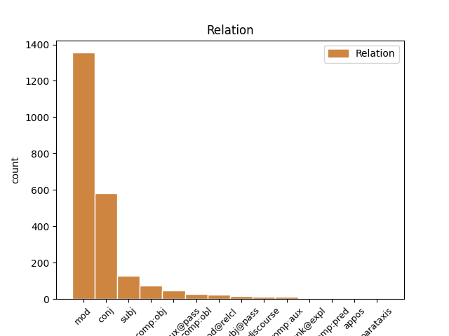
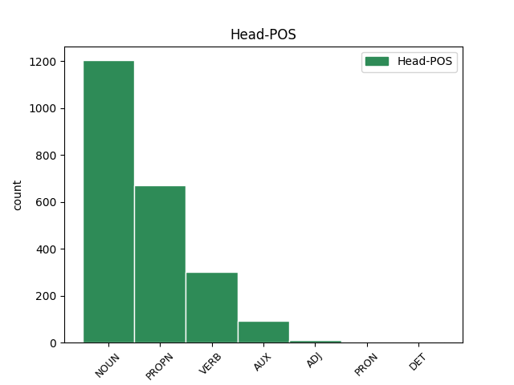
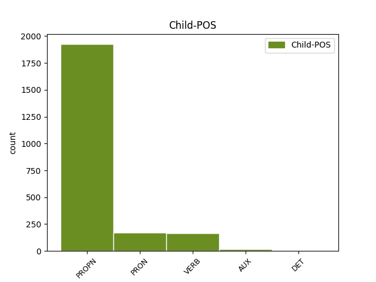

Distribution of features within this leaf



Agreement Rules sorted by frequency.
- When the dependent token is the modifer(mod) of the head token, and the dependent token is PROPN.
1 Докато _ _ _ _ 0 _ _ _
2 водещи _ _ _ _ 0 _ _ _
3 европолитици _ _ _ _ 0 _ _ _
4 като _ _ _ _ 0 _ _ _
5 комисарят комисар NOUN Ncmsf Definite=Def|Gender=Masc|Number=Sing 0 _ _ _
6 по _ _ _ _ 0 _ _ _
7 разширяването _ _ _ _ 0 _ _ _
8 Гюнтер гюнтер PROPN Npmsi Definite=Ind|Gender=Masc|Number=Sing 5 mod _ _
9 Ферхойген _ _ _ _ 0 _ _ _
10 дори _ _ _ _ 0 _ _ _
11 мечтаят _ _ _ _ 0 _ _ _
12 за _ _ _ _ 0 _ _ _
13 приемането _ _ _ _ 0 _ _ _
14 на _ _ _ _ 0 _ _ _
15 група _ _ _ _ 0 _ _ _
16 до _ _ _ _ 0 _ _ _
17 10 _ _ _ _ 0 _ _ _
18 страни _ _ _ _ 0 _ _ _
19 , _ _ _ _ 0 _ _ _
20 бюджетните _ _ _ _ 0 _ _ _
21 специалисти _ _ _ _ 0 _ _ _
22 все _ _ _ _ 0 _ _ _
23 още _ _ _ _ 0 _ _ _
24 се _ _ _ _ 0 _ _ _
25 лутат _ _ _ _ 0 _ _ _
26 в _ _ _ _ 0 _ _ _
27 неизвестност _ _ _ _ 0 _ _ _
28 . _ _ _ _ 0 _ _ _
1 Бедствието _ _ _ _ 0 _ _ _
2 предизвика _ _ _ _ 0 _ _ _
3 хаос _ _ _ _ 0 _ _ _
4 в _ _ _ _ 0 _ _ _
5 полетите _ _ _ _ 0 _ _ _
6 на _ _ _ _ 0 _ _ _
7 Франция франция PROPN Npfsi Definite=Ind|Gender=Fem|Number=Sing 0 _ _ _
8 и _ _ _ _ 0 _ _ _
9 Великобритания великобритания PROPN Npfsi Definite=Ind|Gender=Fem|Number=Sing 7 conj _ SpaceAfter=No
10 . _ _ _ _ 0 _ _ _
1 Единият _ _ _ _ 0 _ _ _
2 от _ _ _ _ 0 _ _ _
3 войниците _ _ _ _ 0 _ _ _
4 бе _ _ _ _ 0 _ _ _
5 намерен намеря-(се) VERB Vpptcv--smi Aspect=Perf|Definite=Ind|Gender=Masc|Number=Sing|VerbForm=Part|Voice=Pass 0 _ _ _
6 да _ _ _ _ 0 _ _ _
7 виси _ _ _ _ 0 _ _ _
8 върху _ _ _ _ 0 _ _ _
9 високоволтажните _ _ _ _ 0 _ _ _
10 жици _ _ _ _ 0 _ _ _
11 на _ _ _ _ 0 _ _ _
12 електрически _ _ _ _ 0 _ _ _
13 стълб _ _ _ _ 0 _ _ _
14 и _ _ _ _ 0 _ _ _
15 предизвикал предизвикам VERB Vpptcao-smi Aspect=Perf|Definite=Ind|Gender=Masc|Number=Sing|Tense=Past|VerbForm=Part|Voice=Act 5 conj _ _
16 спирането _ _ _ _ 0 _ _ _
17 на _ _ _ _ 0 _ _ _
18 тока _ _ _ _ 0 _ _ _
19 в _ _ _ _ 0 _ _ _
20 два _ _ _ _ 0 _ _ _
21 германски _ _ _ _ 0 _ _ _
22 града _ _ _ _ 0 _ _ _
23 . _ _ _ _ 0 _ _ _
1 Напълно _ _ _ _ 0 _ _ _
2 изгорял _ _ _ _ 0 _ _ _
3 е _ _ _ _ 0 _ _ _
4 автобус _ _ _ _ 0 _ _ _
5 , _ _ _ _ 0 _ _ _
6 който който PRON Pre-os-m Case=Nom|Gender=Masc|Number=Sing|PronType=Rel 8 subj _ _
7 се _ _ _ _ 0 _ _ _
8 намирал намирам-(се) VERB Vpitcao-smi Aspect=Imp|Definite=Ind|Gender=Masc|Number=Sing|Tense=Past|VerbForm=Part|Voice=Act 0 _ _ _
9 наблизо _ _ _ _ 0 _ _ _
10 . _ _ _ _ 0 _ _ _
1 35-годишната _ _ _ _ 0 _ _ _
2 Мария мария PROPN Npfsi Definite=Ind|Gender=Fem|Number=Sing 4 subj _ _
3 Милошевич _ _ _ _ 0 _ _ _
4 получила получа VERB Vpptcao-sfi Aspect=Perf|Definite=Ind|Gender=Fem|Number=Sing|Tense=Past|VerbForm=Part|Voice=Act 0 _ _ _
5 сериозна _ _ _ _ 0 _ _ _
6 нервна _ _ _ _ 0 _ _ _
7 криза _ _ _ _ 0 _ _ _
8 , _ _ _ _ 0 _ _ _
9 но _ _ _ _ 0 _ _ _
10 след _ _ _ _ 0 _ _ _
11 това _ _ _ _ 0 _ _ _
12 състоянието _ _ _ _ 0 _ _ _
13 й _ _ _ _ 0 _ _ _
14 се _ _ _ _ 0 _ _ _
15 подобрило _ _ _ _ 0 _ _ _
16 , _ _ _ _ 0 _ _ _
17 уточняват _ _ _ _ 0 _ _ _
18 от _ _ _ _ 0 _ _ _
19 болницата _ _ _ _ 0 _ _ _
20 . _ _ _ _ 0 _ _ _
1 Бомбата _ _ _ _ 0 _ _ _
2 била съм AUX Vxitcat-sfi Aspect=Imp|Definite=Ind|Gender=Fem|Mood=Ind|Number=Sing|VerbForm=Part|Voice=Act 0 _ _ _
3 заложена заложа VERB Vpptcv--sfi Aspect=Perf|Definite=Ind|Gender=Fem|Number=Sing|VerbForm=Part|Voice=Pass 2 comp:aux@pass _ _
4 в _ _ _ _ 0 _ _ _
5 кола _ _ _ _ 0 _ _ _
6 , _ _ _ _ 0 _ _ _
7 паркирана _ _ _ _ 0 _ _ _
8 близо _ _ _ _ 0 _ _ _
9 до _ _ _ _ 0 _ _ _
10 участъка _ _ _ _ 0 _ _ _
11 . _ _ _ _ 0 _ _ _
1 Най-често _ _ _ _ 0 _ _ _
2 се _ _ _ _ 0 _ _ _
3 споменавало _ _ _ _ 0 _ _ _
4 името _ _ _ _ 0 _ _ _
5 на _ _ _ _ 0 _ _ _
6 Мерилин _ _ _ _ 0 _ _ _
7 Монро _ _ _ _ 0 _ _ _
8 , _ _ _ _ 0 _ _ _
9 така _ _ _ _ 0 _ _ _
10 че _ _ _ _ 0 _ _ _
11 учителят _ _ _ _ 0 _ _ _
12 избрал избера VERB Vpptcao-smi Aspect=Perf|Definite=Ind|Gender=Masc|Number=Sing|Tense=Past|VerbForm=Part|Voice=Act 0 _ _ _
13 него аз PRON Ppelas3m Case=Acc|Gender=Masc|Number=Sing|Person=3|PronType=Prs 12 comp:obj _ SpaceAfter=No
14 . _ _ _ _ 0 _ _ _
1 Напълно _ _ _ _ 0 _ _ _
2 изгорял _ _ _ _ 0 _ _ _
3 е _ _ _ _ 0 _ _ _
4 автобус автобус NOUN Ncmsi Definite=Ind|Gender=Masc|Number=Sing 0 _ _ _
5 , _ _ _ _ 0 _ _ _
6 който _ _ _ _ 0 _ _ _
7 се _ _ _ _ 0 _ _ _
8 намирал намирам-(се) VERB Vpitcao-smi Aspect=Imp|Definite=Ind|Gender=Masc|Number=Sing|Tense=Past|VerbForm=Part|Voice=Act 4 mod@relcl _ _
9 наблизо _ _ _ _ 0 _ _ _
10 . _ _ _ _ 0 _ _ _
1 Сугарев _ _ _ _ 0 _ _ _
2 заема _ _ _ _ 0 _ _ _
3 високи _ _ _ _ 0 _ _ _
4 постове _ _ _ _ 0 _ _ _
5 , _ _ _ _ 0 _ _ _
6 без _ _ _ _ 0 _ _ _
7 да _ _ _ _ 0 _ _ _
8 е _ _ _ _ 0 _ _ _
9 полезен _ _ _ _ 0 _ _ _
10 , _ _ _ _ 0 _ _ _
11 и _ _ _ _ 0 _ _ _
12 бих _ _ _ _ 0 _ _ _
13 му аз PRON Ppetds3m Case=Dat|Gender=Masc|Number=Sing|Person=3|PronType=Prs 14 comp:obl _ _
14 препоръчал препоръчам-(се) VERB Vpptcao-smi Aspect=Perf|Definite=Ind|Gender=Masc|Number=Sing|Tense=Past|VerbForm=Part|Voice=Act 0 _ _ _
15 да _ _ _ _ 0 _ _ _
16 подаде _ _ _ _ 0 _ _ _
17 оставка _ _ _ _ 0 _ _ _
18 , _ _ _ _ 0 _ _ _
19 каза _ _ _ _ 0 _ _ _
20 Премянов _ _ _ _ 0 _ _ _
21 . _ _ _ _ 0 _ _ _
1 На _ _ _ _ 0 _ _ _
2 форума _ _ _ _ 0 _ _ _
3 в _ _ _ _ 0 _ _ _
4 събота _ _ _ _ 0 _ _ _
5 по _ _ _ _ 0 _ _ _
6 линия _ _ _ _ 0 _ _ _
7 на _ _ _ _ 0 _ _ _
8 ЕНП _ _ _ _ 0 _ _ _
9 било съм AUX Vxitcat-sni Aspect=Imp|Definite=Ind|Gender=Neut|Mood=Ind|Number=Sing|VerbForm=Part|Voice=Act 0 _ _ _
10 коментирано коментирам VERB Vpitcv--sni Aspect=Imp|Definite=Ind|Gender=Neut|Number=Sing|VerbForm=Part|Voice=Pass 9 comp:aux _ SpaceAfter=No
11 , _ _ _ _ 0 _ _ _
12 че _ _ _ _ 0 _ _ _
13 след _ _ _ _ 0 _ _ _
14 промените _ _ _ _ 0 _ _ _
15 в _ _ _ _ 0 _ _ _
16 Югославия _ _ _ _ 0 _ _ _
17 партията _ _ _ _ 0 _ _ _
18 не _ _ _ _ 0 _ _ _
19 е _ _ _ _ 0 _ _ _
20 направила _ _ _ _ 0 _ _ _
21 никаква _ _ _ _ 0 _ _ _
22 по-сериозна _ _ _ _ 0 _ _ _
23 външнополитическа _ _ _ _ 0 _ _ _
24 заявка _ _ _ _ 0 _ _ _
25 в _ _ _ _ 0 _ _ _
26 Белград _ _ _ _ 0 _ _ _
27 , _ _ _ _ 0 _ _ _
28 заяви _ _ _ _ 0 _ _ _
29 вчера _ _ _ _ 0 _ _ _
30 международният _ _ _ _ 0 _ _ _
31 секретар _ _ _ _ 0 _ _ _
32 на _ _ _ _ 0 _ _ _
33 СДС _ _ _ _ 0 _ _ _
34 Димитър _ _ _ _ 0 _ _ _
35 Абаджиев _ _ _ _ 0 _ _ _
36 . _ _ _ _ 0 _ _ _
1 Барак барак PROPN Hmsi Definite=Ind|Gender=Masc|Number=Sing 2 subj@pass _ _
2 подложен подложа VERB Vpptcv--smi Aspect=Perf|Definite=Ind|Gender=Masc|Number=Sing|VerbForm=Part|Voice=Pass 0 _ _ _
3 на _ _ _ _ 0 _ _ _
4 жестока _ _ _ _ 0 _ _ _
5 критика _ _ _ _ 0 _ _ _
6 в _ _ _ _ 0 _ _ _
7 Кнесета _ _ _ _ 0 _ _ _
1 " _ _ _ _ 0 _ _ _
2 Спортинг спортинг PROPN Npmsi Definite=Ind|Gender=Masc|Number=Sing 0 _ _ _
3 " _ _ _ _ 0 _ _ _
4 ( _ _ _ _ 0 _ _ _
5 Лисабон лисабон PROPN Npmsi Definite=Ind|Gender=Masc|Number=Sing 2 discourse _ SpaceAfter=No
6 ) _ _ _ _ 0 _ _ _
7 , _ _ _ _ 0 _ _ _
8 където _ _ _ _ 0 _ _ _
9 резерва _ _ _ _ 0 _ _ _
10 е _ _ _ _ 0 _ _ _
11 бившият _ _ _ _ 0 _ _ _
12 национал _ _ _ _ 0 _ _ _
13 Ивайло _ _ _ _ 0 _ _ _
14 Йорданов _ _ _ _ 0 _ _ _
15 , _ _ _ _ 0 _ _ _
16 продължава _ _ _ _ 0 _ _ _
17 в _ _ _ _ 0 _ _ _
18 VI _ _ _ _ 0 _ _ _
19 кръг _ _ _ _ 0 _ _ _
20 на _ _ _ _ 0 _ _ _
21 турнира _ _ _ _ 0 _ _ _
22 за _ _ _ _ 0 _ _ _
23 купата _ _ _ _ 0 _ _ _
24 на _ _ _ _ 0 _ _ _
25 Португалия _ _ _ _ 0 _ _ _
26 след _ _ _ _ 0 _ _ _
27 победата _ _ _ _ 0 _ _ _
28 с _ _ _ _ 0 _ _ _
29 4 _ _ _ _ 0 _ _ _
30 : _ _ _ _ 0 _ _ _
31 1 _ _ _ _ 0 _ _ _
32 над _ _ _ _ 0 _ _ _
33 гостуващия _ _ _ _ 0 _ _ _
34 втородивизионен _ _ _ _ 0 _ _ _
35 " _ _ _ _ 0 _ _ _
36 Лейшоеш _ _ _ _ 0 _ _ _
37 " _ _ _ _ 0 _ _ _
38 . _ _ _ _ 0 _ _ _
1 В _ _ _ _ 0 _ _ _
2 конферентния _ _ _ _ 0 _ _ _
3 разговор _ _ _ _ 0 _ _ _
4 са _ _ _ _ 0 _ _ _
5 били _ _ _ _ 0 _ _ _
6 включени _ _ _ _ 0 _ _ _
7 четири _ _ _ _ 0 _ _ _
8 страни _ _ _ _ 0 _ _ _
9 - _ _ _ _ 0 _ _ _
10 мениджърът _ _ _ _ 0 _ _ _
11 на _ _ _ _ 0 _ _ _
12 KPN _ _ _ _ 0 _ _ _
13 по _ _ _ _ 0 _ _ _
14 проекта _ _ _ _ 0 _ _ _
15 за _ _ _ _ 0 _ _ _
16 България _ _ _ _ 0 _ _ _
17 Хенк _ _ _ _ 0 _ _ _
18 Виеренга _ _ _ _ 0 _ _ _
19 , _ _ _ _ 0 _ _ _
20 който който PRON Pre-os-m Case=Nom|Gender=Masc|Number=Sing|PronType=Rel 21 subj@pass _ _
21 бил съм AUX Vxitcat-smi Aspect=Imp|Definite=Ind|Gender=Masc|Mood=Ind|Number=Sing|VerbForm=Part|Voice=Act 0 _ _ _
22 открит _ _ _ _ 0 _ _ _
23 на _ _ _ _ 0 _ _ _
24 мобилния _ _ _ _ 0 _ _ _
25 му _ _ _ _ 0 _ _ _
26 телефон _ _ _ _ 0 _ _ _
27 в _ _ _ _ 0 _ _ _
28 Лондон _ _ _ _ 0 _ _ _
29 , _ _ _ _ 0 _ _ _
30 шефът _ _ _ _ 0 _ _ _
31 на _ _ _ _ 0 _ _ _
32 отдел _ _ _ _ 0 _ _ _
33 " _ _ _ _ 0 _ _ _
34 Международни _ _ _ _ 0 _ _ _
35 проекти _ _ _ _ 0 _ _ _
36 и _ _ _ _ 0 _ _ _
37 инвестиции _ _ _ _ 0 _ _ _
38 " _ _ _ _ 0 _ _ _
39 в _ _ _ _ 0 _ _ _
40 OTE _ _ _ _ 0 _ _ _
41 Василиос _ _ _ _ 0 _ _ _
42 Фетсис _ _ _ _ 0 _ _ _
43 , _ _ _ _ 0 _ _ _
44 който _ _ _ _ 0 _ _ _
45 говорил _ _ _ _ 0 _ _ _
46 от _ _ _ _ 0 _ _ _
47 домашния _ _ _ _ 0 _ _ _
48 си _ _ _ _ 0 _ _ _
49 телефон _ _ _ _ 0 _ _ _
50 край _ _ _ _ 0 _ _ _
51 Атина _ _ _ _ 0 _ _ _
52 , _ _ _ _ 0 _ _ _
53 представителят _ _ _ _ 0 _ _ _
54 на _ _ _ _ 0 _ _ _
55 консорциума _ _ _ _ 0 _ _ _
56 за _ _ _ _ 0 _ _ _
57 България _ _ _ _ 0 _ _ _
58 Стефан _ _ _ _ 0 _ _ _
59 Колев _ _ _ _ 0 _ _ _
60 , _ _ _ _ 0 _ _ _
61 който _ _ _ _ 0 _ _ _
62 се _ _ _ _ 0 _ _ _
63 намираше _ _ _ _ 0 _ _ _
64 в _ _ _ _ 0 _ _ _
65 София _ _ _ _ 0 _ _ _
66 и _ _ _ _ 0 _ _ _
67 самата _ _ _ _ 0 _ _ _
68 работна _ _ _ _ 0 _ _ _
69 група _ _ _ _ 0 _ _ _
70 . _ _ _ _ 0 _ _ _
1 47-годишният _ _ _ _ 0 _ _ _
2 служител _ _ _ _ 0 _ _ _
3 на _ _ _ _ 0 _ _ _
4 отдела _ _ _ _ 0 _ _ _
5 EDOK _ _ _ _ 0 _ _ _
6 работил работя VERB Vpitcao-smi Aspect=Imp|Definite=Ind|Gender=Masc|Number=Sing|Tense=Past|VerbForm=Part|Voice=Act 0 _ _ _
7 в _ _ _ _ 0 _ _ _
8 това _ _ _ _ 0 _ _ _
9 подразделение _ _ _ _ 0 _ _ _
10 над _ _ _ _ 0 _ _ _
11 7 _ _ _ _ 0 _ _ _
12 г. _ _ _ _ 0 _ _ _
13 и _ _ _ _ 0 _ _ _
14 бил съм AUX Vxitcat-smi Aspect=Imp|Definite=Ind|Gender=Masc|Mood=Ind|Number=Sing|VerbForm=Part|Voice=Act 6 conj _ _
15 специалист _ _ _ _ 0 _ _ _
16 по _ _ _ _ 0 _ _ _
17 проблемите _ _ _ _ 0 _ _ _
18 на _ _ _ _ 0 _ _ _
19 Източна _ _ _ _ 0 _ _ _
20 Европа _ _ _ _ 0 _ _ _
21 . _ _ _ _ 0 _ _ _
1 В _ _ _ _ 0 _ _ _
2 конферентния _ _ _ _ 0 _ _ _
3 разговор _ _ _ _ 0 _ _ _
4 са _ _ _ _ 0 _ _ _
5 били _ _ _ _ 0 _ _ _
6 включени _ _ _ _ 0 _ _ _
7 четири _ _ _ _ 0 _ _ _
8 страни _ _ _ _ 0 _ _ _
9 - _ _ _ _ 0 _ _ _
10 мениджърът мениджър NOUN Ncmsf Definite=Def|Gender=Masc|Number=Sing 0 _ _ _
11 на _ _ _ _ 0 _ _ _
12 KPN _ _ _ _ 0 _ _ _
13 по _ _ _ _ 0 _ _ _
14 проекта _ _ _ _ 0 _ _ _
15 за _ _ _ _ 0 _ _ _
16 България _ _ _ _ 0 _ _ _
17 Хенк _ _ _ _ 0 _ _ _
18 Виеренга _ _ _ _ 0 _ _ _
19 , _ _ _ _ 0 _ _ _
20 който _ _ _ _ 0 _ _ _
21 бил съм AUX Vxitcat-smi Aspect=Imp|Definite=Ind|Gender=Masc|Mood=Ind|Number=Sing|VerbForm=Part|Voice=Act 10 mod@relcl _ _
22 открит _ _ _ _ 0 _ _ _
23 на _ _ _ _ 0 _ _ _
24 мобилния _ _ _ _ 0 _ _ _
25 му _ _ _ _ 0 _ _ _
26 телефон _ _ _ _ 0 _ _ _
27 в _ _ _ _ 0 _ _ _
28 Лондон _ _ _ _ 0 _ _ _
29 , _ _ _ _ 0 _ _ _
30 шефът _ _ _ _ 0 _ _ _
31 на _ _ _ _ 0 _ _ _
32 отдел _ _ _ _ 0 _ _ _
33 " _ _ _ _ 0 _ _ _
34 Международни _ _ _ _ 0 _ _ _
35 проекти _ _ _ _ 0 _ _ _
36 и _ _ _ _ 0 _ _ _
37 инвестиции _ _ _ _ 0 _ _ _
38 " _ _ _ _ 0 _ _ _
39 в _ _ _ _ 0 _ _ _
40 OTE _ _ _ _ 0 _ _ _
41 Василиос _ _ _ _ 0 _ _ _
42 Фетсис _ _ _ _ 0 _ _ _
43 , _ _ _ _ 0 _ _ _
44 който _ _ _ _ 0 _ _ _
45 говорил _ _ _ _ 0 _ _ _
46 от _ _ _ _ 0 _ _ _
47 домашния _ _ _ _ 0 _ _ _
48 си _ _ _ _ 0 _ _ _
49 телефон _ _ _ _ 0 _ _ _
50 край _ _ _ _ 0 _ _ _
51 Атина _ _ _ _ 0 _ _ _
52 , _ _ _ _ 0 _ _ _
53 представителят _ _ _ _ 0 _ _ _
54 на _ _ _ _ 0 _ _ _
55 консорциума _ _ _ _ 0 _ _ _
56 за _ _ _ _ 0 _ _ _
57 България _ _ _ _ 0 _ _ _
58 Стефан _ _ _ _ 0 _ _ _
59 Колев _ _ _ _ 0 _ _ _
60 , _ _ _ _ 0 _ _ _
61 който _ _ _ _ 0 _ _ _
62 се _ _ _ _ 0 _ _ _
63 намираше _ _ _ _ 0 _ _ _
64 в _ _ _ _ 0 _ _ _
65 София _ _ _ _ 0 _ _ _
66 и _ _ _ _ 0 _ _ _
67 самата _ _ _ _ 0 _ _ _
68 работна _ _ _ _ 0 _ _ _
69 група _ _ _ _ 0 _ _ _
70 . _ _ _ _ 0 _ _ _
1 Хич _ _ _ _ 0 _ _ _
2 не _ _ _ _ 0 _ _ _
3 се _ _ _ _ 0 _ _ _
4 впечатлявала впечатлявам-(се) VERB Vpitcao-sfi Aspect=Imp|Definite=Ind|Gender=Fem|Number=Sing|Tense=Past|VerbForm=Part|Voice=Act 0 _ _ _
5 , _ _ _ _ 0 _ _ _
6 когато _ _ _ _ 0 _ _ _
7 на _ _ _ _ 0 _ _ _
8 всяка _ _ _ _ 0 _ _ _
9 крачка _ _ _ _ 0 _ _ _
10 за _ _ _ _ 0 _ _ _
11 документите _ _ _ _ 0 _ _ _
12 давала давам-(се) VERB Vpitcao-sfi Aspect=Imp|Definite=Ind|Gender=Fem|Number=Sing|Tense=Past|VerbForm=Part|Voice=Act 4 mod _ _
13 рушвети _ _ _ _ 0 _ _ _
14 . _ _ _ _ 0 _ _ _
1 Радко _ _ _ _ 0 _ _ _
2 Янкулов _ _ _ _ 0 _ _ _
3 оставил оставя-(се) VERB Vpptcao-smi Aspect=Perf|Definite=Ind|Gender=Masc|Number=Sing|Tense=Past|VerbForm=Part|Voice=Act 0 _ _ _
4 Канал канал PROPN Npmsi Definite=Ind|Gender=Masc|Number=Sing 3 comp:obj _ _
5 3 _ _ _ _ 0 _ _ _
6 заради _ _ _ _ 0 _ _ _
7 спорта _ _ _ _ 0 _ _ _
1 Той _ _ _ _ 0 _ _ _
2 не _ _ _ _ 0 _ _ _
3 възнамерявал възнамерявам VERB Vpiicao-smi Aspect=Imp|Definite=Ind|Gender=Masc|Number=Sing|Tense=Past|VerbForm=Part|Voice=Act 0 _ _ _
4 да _ _ _ _ 0 _ _ _
5 го _ _ _ _ 0 _ _ _
6 съди _ _ _ _ 0 _ _ _
7 , _ _ _ _ 0 _ _ _
8 защото _ _ _ _ 0 _ _ _
9 случаят _ _ _ _ 0 _ _ _
10 му _ _ _ _ 0 _ _ _
11 бил съм AUX Vxitcat-smi Aspect=Imp|Definite=Ind|Gender=Masc|Mood=Ind|Number=Sing|VerbForm=Part|Voice=Act 3 mod _ _
12 за _ _ _ _ 0 _ _ _
13 лекар _ _ _ _ 0 _ _ _
14 . _ _ _ _ 0 _ _ _
1 Внезапно _ _ _ _ 0 _ _ _
2 дланта _ _ _ _ 0 _ _ _
3 й _ _ _ _ 0 _ _ _
4 натисна _ _ _ _ 0 _ _ _
5 по _ _ _ _ 0 _ _ _
6 познат _ _ _ _ 0 _ _ _
7 му аз PRON Ppetds3m Case=Dat|Gender=Masc|Number=Sing|Person=3|PronType=Prs 8 mod _ _
8 начин начин NOUN Ncmsi Definite=Ind|Gender=Masc|Number=Sing 0 _ _ _
9 неговото _ _ _ _ 0 _ _ _
10 ляво _ _ _ _ 0 _ _ _
11 слепоочие _ _ _ _ 0 _ _ _
12 и _ _ _ _ 0 _ _ _
13 размаза _ _ _ _ 0 _ _ _
14 там _ _ _ _ 0 _ _ _
15 някаква _ _ _ _ 0 _ _ _
16 течност _ _ _ _ 0 _ _ _
17 , _ _ _ _ 0 _ _ _
18 която _ _ _ _ 0 _ _ _
19 с _ _ _ _ 0 _ _ _
20 бързината _ _ _ _ 0 _ _ _
21 на _ _ _ _ 0 _ _ _
22 етер _ _ _ _ 0 _ _ _
23 проникна _ _ _ _ 0 _ _ _
24 в _ _ _ _ 0 _ _ _
25 черепа _ _ _ _ 0 _ _ _
26 му _ _ _ _ 0 _ _ _
27 . _ _ _ _ 0 _ _ _
1 От _ _ _ _ 0 _ _ _
2 майка _ _ _ _ 0 _ _ _
3 си _ _ _ _ 0 _ _ _
4 и _ _ _ _ 0 _ _ _
5 баща _ _ _ _ 0 _ _ _
6 си _ _ _ _ 0 _ _ _
7 знам _ _ _ _ 0 _ _ _
8 каква какъв DET Pia--s-f Gender=Fem|Number=Sing|PronType=Int 10 comp:obj _ _
9 е _ _ _ _ 0 _ _ _
10 била съм VERB Vxitcat-sfi Aspect=Imp|Definite=Ind|Gender=Fem|Mood=Ind|Number=Sing|VerbForm=Part|Voice=Act 0 _ _ _
11 , _ _ _ _ 0 _ _ _
12 а _ _ _ _ 0 _ _ _
13 и _ _ _ _ 0 _ _ _
14 от _ _ _ _ 0 _ _ _
15 дете _ _ _ _ 0 _ _ _
16 помня _ _ _ _ 0 _ _ _
17 каква _ _ _ _ 0 _ _ _
18 беше _ _ _ _ 0 _ _ _
19 . _ _ _ _ 0 _ _ _
1 - _ _ _ _ 0 _ _ _
2 Ако _ _ _ _ 0 _ _ _
3 успеем _ _ _ _ 0 _ _ _
4 да _ _ _ _ 0 _ _ _
5 намерим _ _ _ _ 0 _ _ _
6 вярната верен ADJ Afsd Definite=Def|Degree=Pos|Gender=Fem|Number=Sing 0 _ _ _
7 , _ _ _ _ 0 _ _ _
8 нашата наш DET Pszl-s1fd Definite=Def|Gender=Fem|Number=Sing|Person=1|Poss=Yes|PronType=Prs 6 conj _ _
9 си _ _ _ _ 0 _ _ _
10 пътека _ _ _ _ 0 _ _ _
11 , _ _ _ _ 0 _ _ _
12 смятам _ _ _ _ 0 _ _ _
13 , _ _ _ _ 0 _ _ _
14 че _ _ _ _ 0 _ _ _
15 нещата _ _ _ _ 0 _ _ _
16 ще _ _ _ _ 0 _ _ _
17 тръгнат _ _ _ _ 0 _ _ _
18 учудващо _ _ _ _ 0 _ _ _
19 бързо _ _ _ _ 0 _ _ _
20 . _ _ _ _ 0 _ _ _
1 Вие _ _ _ _ 0 _ _ _
2 намирате _ _ _ _ 0 _ _ _
3 , _ _ _ _ 0 _ _ _
4 че _ _ _ _ 0 _ _ _
5 въпросната _ _ _ _ 0 _ _ _
6 роля _ _ _ _ 0 _ _ _
7 е _ _ _ _ 0 _ _ _
8 отвратителна _ _ _ _ 0 _ _ _
9 , _ _ _ _ 0 _ _ _
10 докато _ _ _ _ 0 _ _ _
11 в _ _ _ _ 0 _ _ _
12 романа _ _ _ _ 0 _ _ _
13 ми _ _ _ _ 0 _ _ _
14 не _ _ _ _ 0 _ _ _
15 е _ _ _ _ 0 _ _ _
16 била съм AUX Vxitcat-sfi Aspect=Imp|Definite=Ind|Gender=Fem|Mood=Ind|Number=Sing|VerbForm=Part|Voice=Act 0 _ _ _
17 такава такъв DET Pda--s-f Gender=Fem|Number=Sing|PronType=Dem 16 comp:pred _ SpaceAfter=No
18 . _ _ _ _ 0 _ _ _
1 Движението _ _ _ _ 0 _ _ _
2 обаче _ _ _ _ 0 _ _ _
3 било съм AUX Vxitcat-sni Aspect=Imp|Definite=Ind|Gender=Neut|Mood=Ind|Number=Sing|VerbForm=Part|Voice=Act 0 _ _ _
4 отворено отворя VERB Vpptcv--sni Aspect=Perf|Definite=Ind|Gender=Neut|Number=Sing|VerbForm=Part|Voice=Pass 3 comp:pred _ _
5 за _ _ _ _ 0 _ _ _
6 диалог _ _ _ _ 0 _ _ _
7 . _ _ _ _ 0 _ _ _
1 Това _ _ _ _ 0 _ _ _
2 обаче _ _ _ _ 0 _ _ _
3 било съм AUX Vxitcat-sni Aspect=Imp|Definite=Ind|Gender=Neut|Mood=Ind|Number=Sing|VerbForm=Part|Voice=Act 0 _ _ _
4 нищо никой PRON Pne-os-ni Case=Nom|Definite=Ind|Gender=Neut|Number=Sing|PronType=Neg 3 comp:pred _ _
5 в _ _ _ _ 0 _ _ _
6 сравнение _ _ _ _ 0 _ _ _
7 с _ _ _ _ 0 _ _ _
8 огромните _ _ _ _ 0 _ _ _
9 кражби _ _ _ _ 0 _ _ _
10 , _ _ _ _ 0 _ _ _
11 за _ _ _ _ 0 _ _ _
12 които _ _ _ _ 0 _ _ _
13 говорели _ _ _ _ 0 _ _ _
14 собствениците _ _ _ _ 0 _ _ _
15 . _ _ _ _ 0 _ _ _
1 Със _ _ _ _ 0 _ _ _
2 сигурност _ _ _ _ 0 _ _ _
3 бил съм AUX Vxitcat-smi Aspect=Imp|Definite=Ind|Gender=Masc|Mood=Ind|Number=Sing|VerbForm=Part|Voice=Act 28 parataxis _ _
4 записан _ _ _ _ 0 _ _ _
5 целият _ _ _ _ 0 _ _ _
6 разговор _ _ _ _ 0 _ _ _
7 между _ _ _ _ 0 _ _ _
8 посланик _ _ _ _ 0 _ _ _
9 Титов _ _ _ _ 0 _ _ _
10 и _ _ _ _ 0 _ _ _
11 Георги _ _ _ _ 0 _ _ _
12 Пирински _ _ _ _ 0 _ _ _
13 , _ _ _ _ 0 _ _ _
14 проведен _ _ _ _ 0 _ _ _
15 в _ _ _ _ 0 _ _ _
16 столичния _ _ _ _ 0 _ _ _
17 ресторант _ _ _ _ 0 _ _ _
18 " _ _ _ _ 0 _ _ _
19 Уно _ _ _ _ 0 _ _ _
20 " _ _ _ _ 0 _ _ _
21 в _ _ _ _ 0 _ _ _
22 първите _ _ _ _ 0 _ _ _
23 десет _ _ _ _ 0 _ _ _
24 дни _ _ _ _ 0 _ _ _
25 на _ _ _ _ 0 _ _ _
26 юли _ _ _ _ 0 _ _ _
27 , _ _ _ _ 0 _ _ _
28 казал кажа VERB Vpptcao-smi Aspect=Perf|Definite=Ind|Gender=Masc|Number=Sing|Tense=Past|VerbForm=Part|Voice=Act 0 _ _ _
29 Цветков _ _ _ _ 0 _ _ _
30 . _ _ _ _ 0 _ _ _
1 Никой никой DET Pne-os-m Case=Nom|Gender=Masc|Number=Sing|PronType=Neg 5 subj _ _
2 от _ _ _ _ 0 _ _ _
3 агитките _ _ _ _ 0 _ _ _
4 не _ _ _ _ 0 _ _ _
5 разбрал разбера-(се) VERB Vpptcao-smi Aspect=Perf|Definite=Ind|Gender=Masc|Number=Sing|Tense=Past|VerbForm=Part|Voice=Act 0 _ _ _
6 , _ _ _ _ 0 _ _ _
7 че _ _ _ _ 0 _ _ _
8 има _ _ _ _ 0 _ _ _
9 ранен _ _ _ _ 0 _ _ _
10 човек _ _ _ _ 0 _ _ _
11 в _ _ _ _ 0 _ _ _
12 заведението _ _ _ _ 0 _ _ _
13 . _ _ _ _ 0 _ _ _
1 Един един DET Pfe-os-mi Case=Nom|Definite=Ind|Gender=Masc|Number=Sing|PronType=Ind 9 subj@pass _ _
2 от _ _ _ _ 0 _ _ _
3 северните _ _ _ _ 0 _ _ _
4 квартали _ _ _ _ 0 _ _ _
5 на _ _ _ _ 0 _ _ _
6 иранската _ _ _ _ 0 _ _ _
7 столица _ _ _ _ 0 _ _ _
8 Техеран _ _ _ _ 0 _ _ _
9 бил съм AUX Vxitcat-smi Aspect=Imp|Definite=Ind|Gender=Masc|Mood=Ind|Number=Sing|VerbForm=Part|Voice=Act 0 _ _ _
10 подложен _ _ _ _ 0 _ _ _
11 на _ _ _ _ 0 _ _ _
12 минометен _ _ _ _ 0 _ _ _
13 обстрел _ _ _ _ 0 _ _ _
14 . _ _ _ _ 0 _ _ _
1 Засега _ _ _ _ 0 _ _ _
2 не _ _ _ _ 0 _ _ _
3 е _ _ _ _ 0 _ _ _
4 ясно _ _ _ _ 0 _ _ _
5 дали _ _ _ _ 0 _ _ _
6 и _ _ _ _ 0 _ _ _
7 самият сам ADJ Amsf Definite=Def|Degree=Pos|Gender=Masc|Number=Sing 0 _ _ _
8 той аз PRON Ppe-os3m Case=Nom|Gender=Masc|Number=Sing|Person=3|PronType=Prs 7 unk@expl _ _
9 не _ _ _ _ 0 _ _ _
10 изразява _ _ _ _ 0 _ _ _
11 собствени _ _ _ _ 0 _ _ _
12 виждания _ _ _ _ 0 _ _ _
13 с _ _ _ _ 0 _ _ _
14 твърденията _ _ _ _ 0 _ _ _
15 си _ _ _ _ 0 _ _ _
16 , _ _ _ _ 0 _ _ _
17 че _ _ _ _ 0 _ _ _
18 Агов _ _ _ _ 0 _ _ _
19 не _ _ _ _ 0 _ _ _
20 е _ _ _ _ 0 _ _ _
21 съгласувал _ _ _ _ 0 _ _ _
22 думите _ _ _ _ 0 _ _ _
23 си _ _ _ _ 0 _ _ _
24 с _ _ _ _ 0 _ _ _
25 партията _ _ _ _ 0 _ _ _
26 и _ _ _ _ 0 _ _ _
27 правителството _ _ _ _ 0 _ _ _
28 . _ _ _ _ 0 _ _ _
Disagree Examples:
1 Тогава _ _ _ _ 0 _ _ _
2 и _ _ _ _ 0 _ _ _
3 Кина кина PROPN Npfsi Definite=Ind|Gender=Fem|Number=Sing 0 _ _ _
4 и _ _ _ _ 0 _ _ _
5 Радулчо радулчо PROPN Npmsi Definite=Ind|Gender=Masc|Number=Sing 3 conj _ _
6 потеглиха _ _ _ _ 0 _ _ _
7 към _ _ _ _ 0 _ _ _
8 село _ _ _ _ 0 _ _ _
9 . _ _ _ _ 0 _ _ _
1 Град град NOUN Ncmsi Definite=Ind|Gender=Masc|Number=Sing 0 _ _ _
2 Велико велик PROPN Ansi Definite=Ind|Degree=Pos|Gender=Neut|Number=Sing 1 mod _ _
3 Търново _ _ _ _ 0 _ _ _
4 е _ _ _ _ 0 _ _ _
5 разположен _ _ _ _ 0 _ _ _
6 в _ _ _ _ 0 _ _ _
7 живописна _ _ _ _ 0 _ _ _
8 местност _ _ _ _ 0 _ _ _
9 . _ _ _ _ 0 _ _ _
1 Излязоха _ _ _ _ 0 _ _ _
2 и _ _ _ _ 0 _ _ _
3 четиримата _ _ _ _ 0 _ _ _
4 - _ _ _ _ 0 _ _ _
5 Балашев балашев PROPN Hmsi Definite=Ind|Gender=Masc|Number=Sing 0 _ _ _
6 , _ _ _ _ 0 _ _ _
7 Димка димка PROPN Npfsi Definite=Ind|Gender=Fem|Number=Sing 5 conj _ _
8 и _ _ _ _ 0 _ _ _
9 телеграфистът _ _ _ _ 0 _ _ _
10 със _ _ _ _ 0 _ _ _
11 сестра _ _ _ _ 0 _ _ _
12 си _ _ _ _ 0 _ _ _
13 . _ _ _ _ 0 _ _ _
1 Аз _ _ _ _ 0 _ _ _
2 да _ _ _ _ 0 _ _ _
3 бях _ _ _ _ 0 _ _ _
4 я аз PRON Ppetas3f Case=Acc|Gender=Fem|Number=Sing|Person=3|PronType=Prs 5 comp:obj _ _
5 сварил сваря-(се) VERB Vpptcao-smi Aspect=Perf|Definite=Ind|Gender=Masc|Number=Sing|Tense=Past|VerbForm=Part|Voice=Act 0 _ _ _
6 , _ _ _ _ 0 _ _ _
7 щях _ _ _ _ 0 _ _ _
8 да _ _ _ _ 0 _ _ _
9 я _ _ _ _ 0 _ _ _
10 науча _ _ _ _ 0 _ _ _
11 аз _ _ _ _ 0 _ _ _
12 нея _ _ _ _ 0 _ _ _
13 . _ _ _ _ 0 _ _ _
1 Нашите _ _ _ _ 0 _ _ _
2 славни _ _ _ _ 0 _ _ _
3 битки _ _ _ _ 0 _ _ _
4 в _ _ _ _ 0 _ _ _
5 отечество отечество NOUN Ncnsi Definite=Ind|Gender=Neut|Number=Sing 0 _ _ _
6 България българия PROPN Npfsi Definite=Ind|Gender=Fem|Number=Sing 5 mod _ _
7 ги _ _ _ _ 0 _ _ _
8 помни _ _ _ _ 0 _ _ _
9 народът _ _ _ _ 0 _ _ _
10 . _ _ _ _ 0 _ _ _